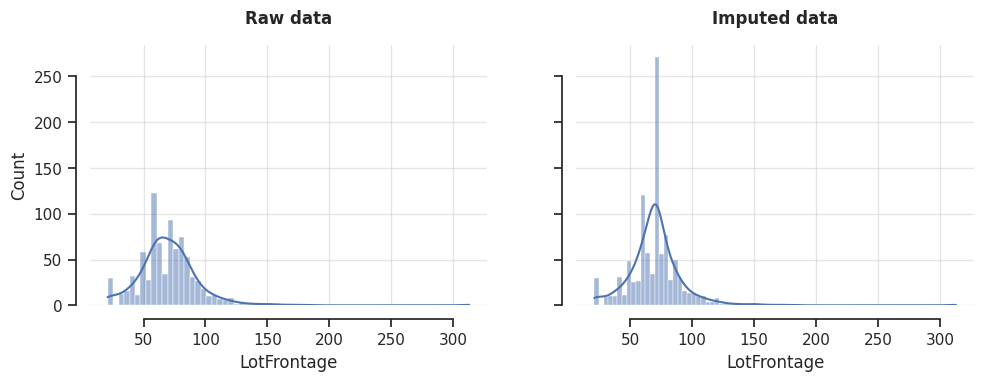

Overview#
Overview and Benefits Key Concepts
Introduction#
In practice, we use mean imputation or median imputation without giving much thought to the distributions of the variables we want to impute. However, it’s good to consider that the mean is a good estimate of the center of the variable when the variable has a symmetrical distribution. Therefore, we’d use mean imputation when the data shows a normal distribution, or the distribution is otherwise symmetrical, and median imputation when the variables are skewed.
Skewed distributions lead to biased estimates of the mean, making it an inaccurate representation of the distribution’s center. In contrast, the median is robust to skewness. Additionally, the mean is sensitive to outliers, whereas the median remains unaffected. Therefore, in skewed distributions, the median is a better estimate of the center of mass.
In the following image, we see how the median is moved away from the distribution center when the variables have a strong left or right skew:

These details tend to be more important when carrying out statistical analysis, and we tend to ignore them when preprocessing data for machine learning. However, keep in mind that some regression models and feature selection procedures, like ANOVA, make assumptions about the underlying distribution of the data. You can complement your imputation methods with data analysis to understand how the imputation affects the variable’s distribution and its relationship with other variables.
Effects on the variable distribution#
Replacing missing values with the mean or median affects the variable’s distribution and its relationships with other variables in the dataset. If there are a few missing data points, these effects can be negligible. However, if a large percentage of data is missing, the impact becomes significant.
Imputation with the mean or median reduces the variable’s variability, such as its standard deviation, by adding more data points around the center of the distribution. With reduced variability, data points that were not previously considered outliers may now be flagged as outliers using simple detection methods like the IQR (interquartile range) proximity rule.
In addition, mean and median imputation distort the relationship—such as correlation or covariance—between the imputed variable and other variables in the dataset, potentially affecting their relationship with the target variable as well. Hence, the outputs of models that rely on conditional joint probability estimates might be affected by mean imputation and median imputation, particularly if the percentage of missing data is large.
Mean and median imputation are often preferred when training linear regression or logistic regression models. In contrast, imputation with arbitrary numbers is commonly used with decision tree-based algorithms. When the relationship among the variables is crucial, you might want to consider better ways to estimate the missing data, such as multiple imputation (aka, multivariate imputation).
MeanMedianImputer#
Feature-engine’s MeanMedianImputer() replaces missing data with the variable’s
mean or median value, determined over the observed values. Hence, it can only impute
numerical variables. You can pass the
list of variables you want to impute, or alternatively, MeanMedianImputer()
will automatically impute all numerical variables in the training set.
Python implementation#
In this section, we will explore MeanMedianImputer()’s functionality. Let’s start by
importing the required libraries:
import seaborn as sns
import matplotlib.pyplot as plt
from sklearn.datasets import fetch_openml
from sklearn.pipeline import make_pipeline
from sklearn.model_selection import train_test_split
from feature_engine.imputation import MeanMedianImputer
from feature_engine.imputation import AddMissingIndicator
We’ll use the house prices dataset from OpenML:
# Load dataset
X, y = fetch_openml(name='house_prices', version=1, return_X_y=True, as_frame=True, parser='auto')
In the following code chunk, we’ll split the dataset into train and test retaining only three features, and we’ll set aside 4 observations with missing data from the test set:
target_features = ['Neighborhood','LotFrontage','MasVnrArea']
X = X[target_features]
X_train, X_test, y_train, y_test = train_test_split(X, y, test_size=0.3, random_state=42)
# Select specific houses with missing data from the test set
target_idx = [113,292,650, 1018]
X_test_subset = X_test.loc[target_idx]
Let’s visualize the subset of the test set with missing values:
print(X_test_subset)
In the following output, we see five houses; three of them with missing values for either LotFrontage or MasVnrArea:
Neighborhood LotFrontage MasVnrArea
113 Crawfor NaN 184.0
292 Edwards 60.0 0.0
650 Somerst 65.0 NaN
1018 Gilbert NaN 76.0
Let’s now set up and fit MeanMedianImputer() with the strategy to mean,
so we can impute the variables LotFrontage and MasVnrArea:
# Set up the imputer
mmi = MeanMedianImputer(
imputation_method='mean',
variables=['LotFrontage', 'MasVnrArea']
)
# Fit transformer with training data
mmi.fit(X_train)
It’s worth noting that we have the flexibility to omit the variables parameter,
in which case, MeanMedianImputer() will automatically find and impute all
numeric features.
After fitting MeanMedianImputer(), we can check out the statistics
(either mean or median; mean in this scenario) for each of the variables to impute:
# Show mean values learned with the training data
mmi.imputer_dict_
The imputer_dict_ attribute shows the learned statistics:
{'LotFrontage': 70.375, 'MasVnrArea': 105.26104023552503}
This dictionary is used internally to impute the missing values.
Let’s transform the subset of the test data with the missing data we previewed earlier:
# Transform the subset of the test data
X_test_subset_t = mmi.transform(X_test_subset)
If we now execute X_test_subset_t.head(), we’ll see the completed data set,
containing the imputed values:
Neighborhood LotFrontage MasVnrArea
113 Crawfor 70.375 184.00000
292 Edwards 60.000 0.00000
650 Somerst 65.000 105.26104
1018 Gilbert 70.375 76.00000
Imputing missing values alongside missing indicators#
Mean or median imputation are commonly done alongside adding missing indicators.
We can add missing indicators with AddMissingIndicator() from Feature-engine.
We can chain AddMissingIndicator() with MeanMedianImputer() using a
scikit-learn pipeline.
For example, let’s create an imputer pipeline to add missing indicators and then and impute the missing values:
# Create imputer pipeline
imputer = make_pipeline(
AddMissingIndicator(),
MeanMedianImputer()
)
# Fit the pipeline
imputer.fit(X_train)
Now, we can transform the data:
X_test_subset_t = imputer.transform(X_test_subset)
If we now execute X_test_subset_t.head(), we’ll see a dataframe where LotFrontage
and MasVnrArea are now complete, that is, missing values were replaced with the mean
of the observed data, and additional columns with the missing indicators:
Neighborhood LotFrontage MasVnrArea LotFrontage_na MasVnrArea_na
113 Crawfor 70.0 184.0 1 0
292 Edwards 60.0 0.0 0 0
650 Somerst 65.0 0.0 0 1
1018 Gilbert 70.0 76.0 1 0
The missing indicator columns flag those observations that were originally missing values.
Note that both classes automatically found the numerical variables, as
we haven’t specified the variables parameter.
Distribution change after imputation#
Let’s analyze how the imputation might change the distribution of the variables.
First, let’s see how much missing data we have for LotFrontage in the training data:
X_train.LotFrontage.isnull().mean().round(2)
As a result, we can see nearly 19% of missing data:
0.19
In the following code, we’ll create a plot with the raw variable distribution on the left panel and the distribution after imputation on the right panel:
# Customize plot
sns.set(style="ticks")
plt.rcParams['axes.grid'] = True
plt.rcParams['grid.alpha'] = 0.5
# Create figure
fig,axes = plt.subplots(ncols=2, figsize=(10,4), sharex=True, sharey=True)
# Plot histogram with KDE for the original data
sns.histplot(data=X_train, x='LotFrontage', kde=True, ax=axes[0])
axes[0].set_title('Original', weight='bold', y=1.05)
# Plot histogram with KDE for the transformed data
sns.histplot(data=mmi.transform(X_train), x='LotFrontage', kde=True, ax=axes[1])
axes[1].set_title('Imputed', weight='bold', y=1.05)
# Further customize plot
sns.despine(offset=10, trim=True)
plt.tight_layout(w_pad=4)
plt.show()
After the imputation, we see on the right panel that more observations are now at the center of the distribution:
Because of the increase in the number of observations at the center, the variance of the variable decreases, and the kurtosis coefficient increases.
Additional resources#
In the following python Jupyter notebook you will find more details on the functionality
of the MeanMedianImputer(), including how to select numerical variables
automatically. You will also see how to navigate the different attributes of the
transformer to find the mean or median values of the variables.
For more details about this and other feature engineering methods check out these resources:

Feature Engineering for Machine Learning#
Or read our book:

Python Feature Engineering Cookbook#
Both our book and course are suitable for beginners and more advanced data scientists alike. By purchasing them you are supporting Sole, the main developer of Feature-engine.